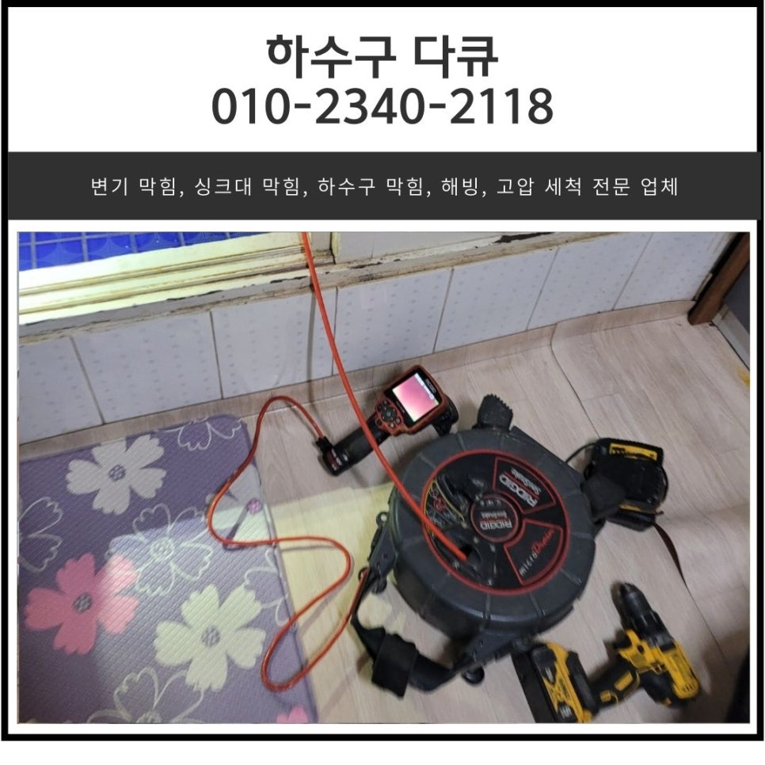
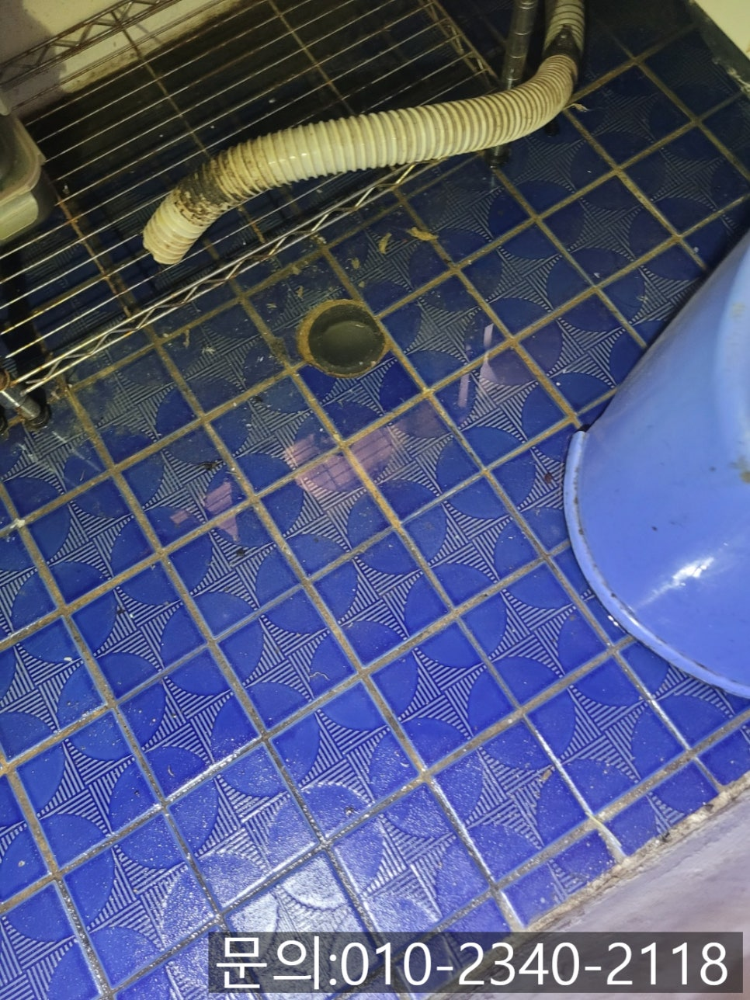
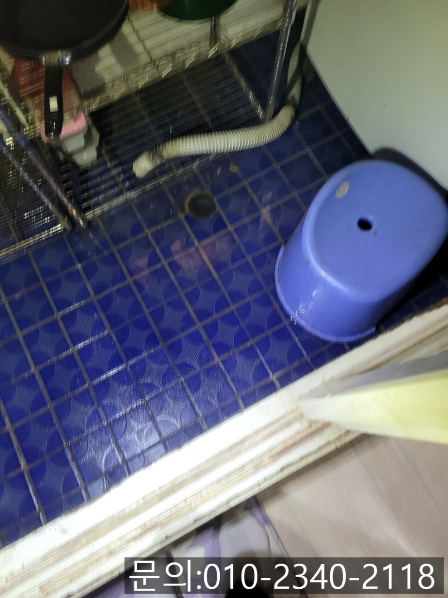
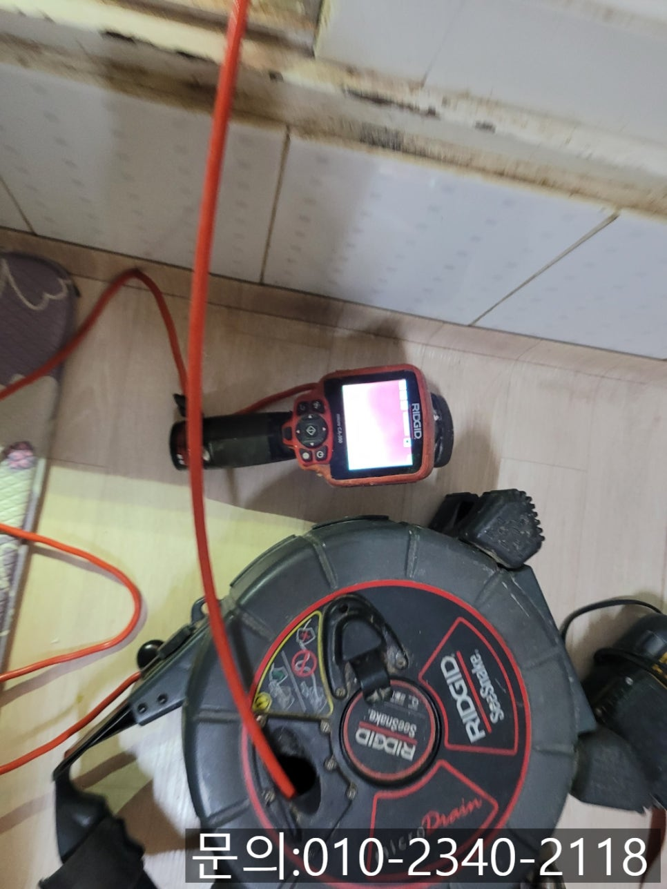
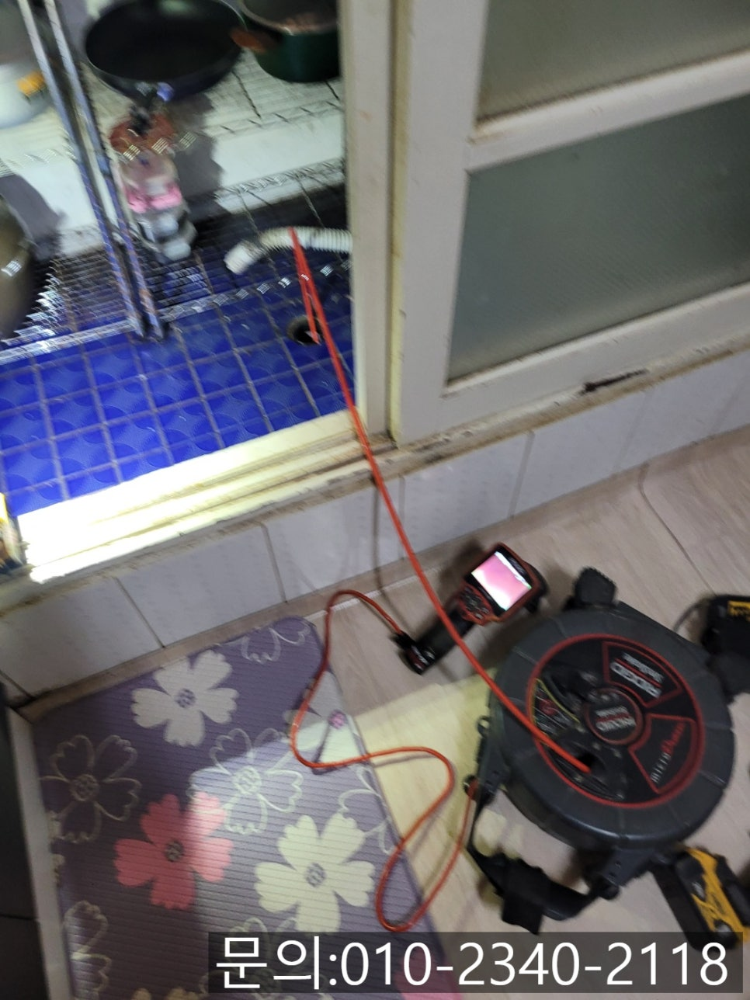
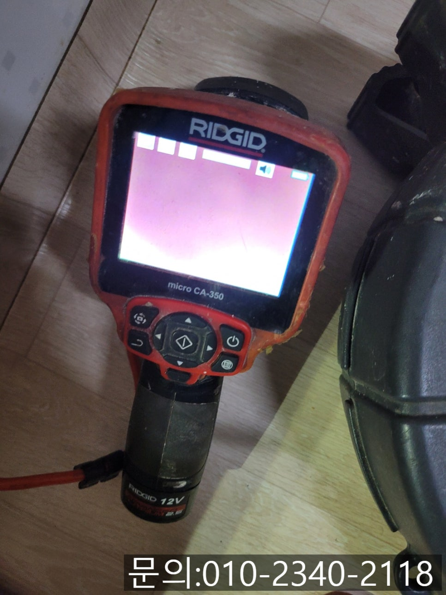
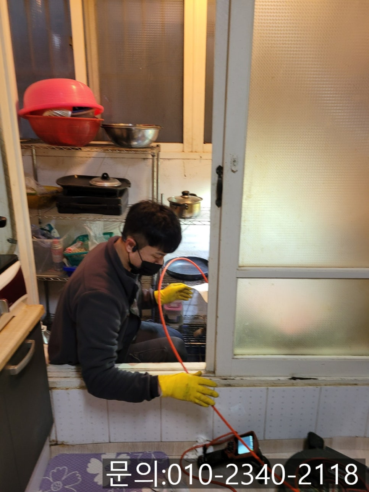

🏠 향남읍 세탁실 배수구 막힘 화성 향남 하수구 역류 뚫는 설비 업체
화성 향남 하수구막힘 전문 시공 후기

📋 작업 개요
- 위치: 화성 향남, 향남, 화성
- 서비스 유형: 하수구막힘, 배관막힘, 맨홀막힘, 역류해결, 뚫는업체
- 작업 일시: 2025. 4. 1. 19:39
- 업체명: 하수구수사대 (010-5615-2118)
🔍 문제 상황
안녕하세요.
향남읍 세탁실 배수구 막힘, 화성 향남 하수구 역류 뚫는 설비 업체 하수구 다큐입니다.
세탁실 바닥 하수구가 역류하는 문제는 가정에서 흔하게 발생하는 골칫거리 중 하나에요.
세탁기를 돌리고 흘러나온 물이 배관을 타고 내려가지 못하고 역류해 바닥이 물로 흥건해지고, 악취까지 발생하는 상황을 겪게 되면 스트레스를 받게 됩니다.
오늘은 향남읍 세탁실 배수구 막힘의 원인과 해결하는 방법을 소개해 드릴게요.
향남읍 세탁실 배수구 막힘의 원인
빨래를 세탁할 때 사용하는 세제 찌꺼기, 머리카락 등이 배관에 쌓여 막힐 수 있습니다.

🔎 원인 분석
💡 전문가 진단: 정밀 진단 장비를 사용하여 슬러지의 고착 여부를 판명하고 타격/세척 작업을 실시했습니다.
세탁물에서 빼지 못한 이물질이나 먼지 등이 오랜 시간 축적되어 막힐 수 있습니다.
배관의 구배가 좋지 않을 경우 물이 잘 빠지지 않아 막힘이 발생할 수 있습니다.
2. 향남읍 세탁실 배수구 막힘 예방하는 방법
배수구 안쪽에 거름망을 설치해 이물질이 들어가지 않도록 해주셔야 합니다.
배관이 막히기 전에 배수구 클리너를 사용하여 찌꺼기를 제거하고 배관 내부를 깨끗하게 유지합니다.
오늘은 화성 향남 하수구 역류 뚫는 설비 업체 하수구 다큐가 다녀온 현장을 소개해 드릴게요.
얼마 전부터 세탁기를 돌릴 때마다 물이 천천히 내려가더니 급기야 역류하는 현상을 겪고 있다고 방문해달라는 전화 연락을 받았습니다.

🔧 작업 과정
세탁기에서 한 번에 사용되는 물의 양이 많다 보니 잠깐 그러다 말겠지 생각했지만 시간이 지날수록 좋아지기는커녕 점점 악화되어 물이 역류하기 시작했고, 결국 하수구가 막혀 불편을 겪고 계셨어요.
하수구 역류 뚫는 설비 업체 하수구 다큐는 전화를 끊고, 필요한 장비들을 챙겨 신속하게 현장으로 달려갔습니다.
현장에 도착해 세탁실을 확인해 보니 유선상 말씀하신 것처럼 배수구에 물이 고여있는 상태였어요.
정확한 원인을 파악하기 위해 내시경 카메라를 배관 내부로 넣어 점검해 보기로 했어요.
하수구 배관의 경우 사람의 눈으로 확인할 수 없다 보니 내시경 카메라를 진입시켜 막힘의 원인을 파악해야 합니다.
내시경 카메라가 배관 내부로 진입하자 화면이 붉게만 보입니다.
기름 슬러지와 각종 이물질로 인해 배관이 꽉 막혀있다 보니 카메라에 연결된 조명에 의해 붉게만 보이는 거예요.
고객님께 배관 막힘의 원인에 대해 설명해 드린 다음 플렉스 샤프트 장비를 사용해 기름 슬러지와 각종 이물질을 제거하기로 했습니다.
플렉스 샤프트는 노즐 끝에 달린 체인이 배관 내부에서 360도로 회전하면서 배관에 쌓인 이물질을 제거하는 장비입니다.
내시경 카메라로 이물질의 위치를 파악해가며 플렉스 샤프트로 이물질을 제거해나갔습니다.
집안에서 확인되는 이물질은 플렉스 샤프트를 이용해 모두 제거했지만 통수 테스트를 진행했을 때 물은 내려가긴 하지만 이상함을 감지한 하수구 다큐는 고객님께 말씀드리고 외부로 나가 반대쪽에서 배관을 점검해 보기로 했어요.
집과 연결된 맨홀을 찾아 내시경 카메라로 점검해 보니 예상했던 대로 기름 슬러지 덩어리가 배관의 일부를 막고 있어 시원하게 통수가 진행되지 않았던 것 같아요.


✅ 작업 완료
플렉스 샤프트를 이용해 잔여 이물질을 제거하자 돌처럼 딱딱한 기름 슬러지 덩어리가 떨어져 나왔습니다.
배관을 막고 있던 기름 슬러지 덩어리를 모두 제거하고 집으로 들어가 많은 양의 물을 흘려보내니 아까와 다르게 시원하게 빠져나가는 것을 확인할 수 있었습니다.
경기도 화성시 향남읍 상신하길로328번길 26 5층 505호 5호




⚠️ 하수구 배관 막힘 예방 및 관리 가이드
- ✅ 머리카락, 비닐, 물티슈 등 물에 분해되지 않는 이물질은 하수구 유입을 절대 금지해 주세요.
- ✅ 하수구 거름망을 씌우고 모여진 이물질은 주기적으로 쓰레기통에 바로 비워주셔야 합니다.
- ✅ 배관 노후가 심할 경우 이물질이 더 쉽게 걸리므로 주기적인 배관 세척(고압세척 등)을 권장합니다.
- ✅ 작업 후 1년 이내 재발 시 하수구수사대에서 무상 A/S 보증 서비스를 제공합니다.
💡 핵심 정리
- 확실한 장비 작업(내시경 점검 및 샤프트 스케일링)으로 원인을 뿌리 뽑습니다.
- 작업 후 1년 이내에 동일한 부위 재발 시 100% 무상 A/S 서비스를 보장합니다.
- 서울 · 경기 · 인천 전 지역에 24시간 언제든 긴급 출동할 수 있도록 항시 대기 중입니다.
❓ 자주 묻는 질문 (FAQ)
🚨 화성 향남 하수구막힘 문제로 고민이신가요?
정확한 원인 진단과 확실한 시공으로 재발 없는 해결을 약속드립니다.
24시간 긴급 출동 | 서울 · 경기 · 인천 전지역 | 1년 내 재발 시 무상 A/S